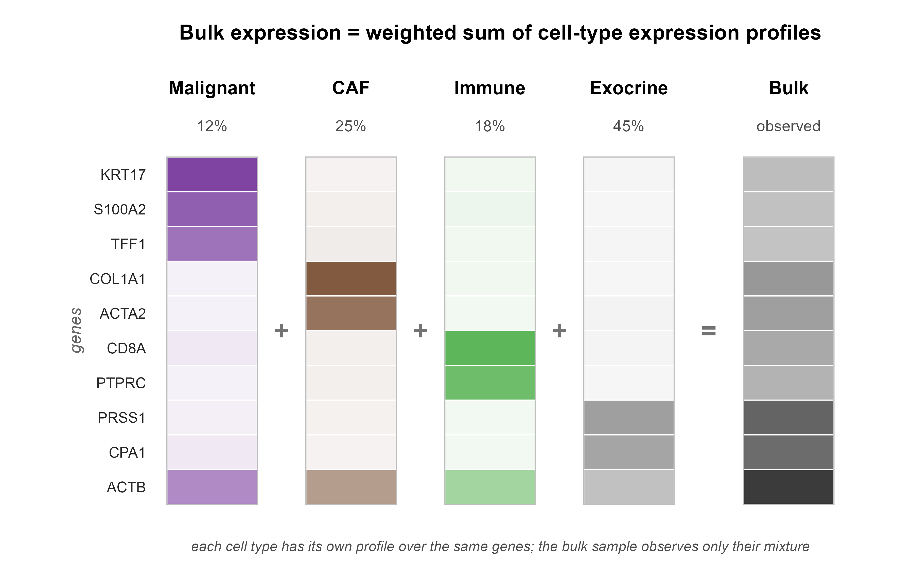
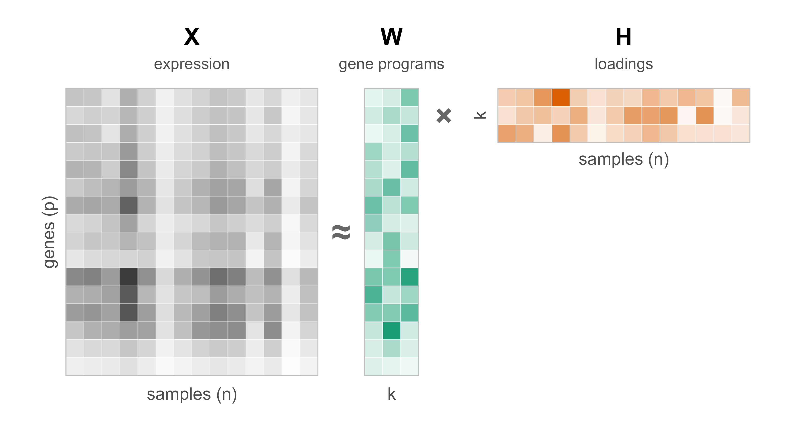
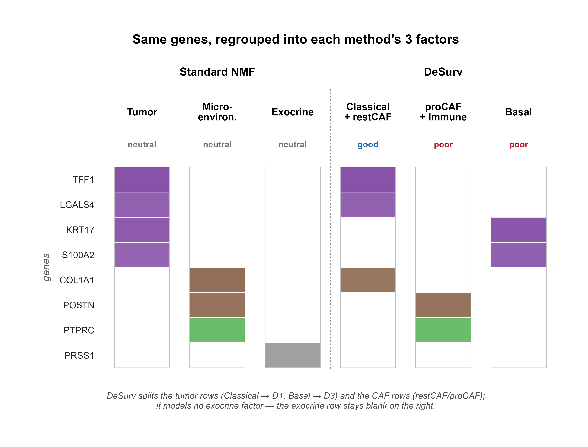
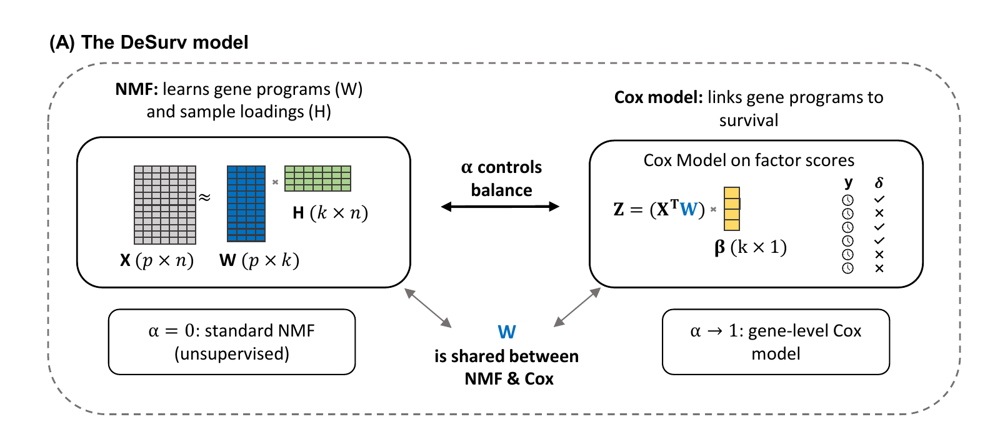
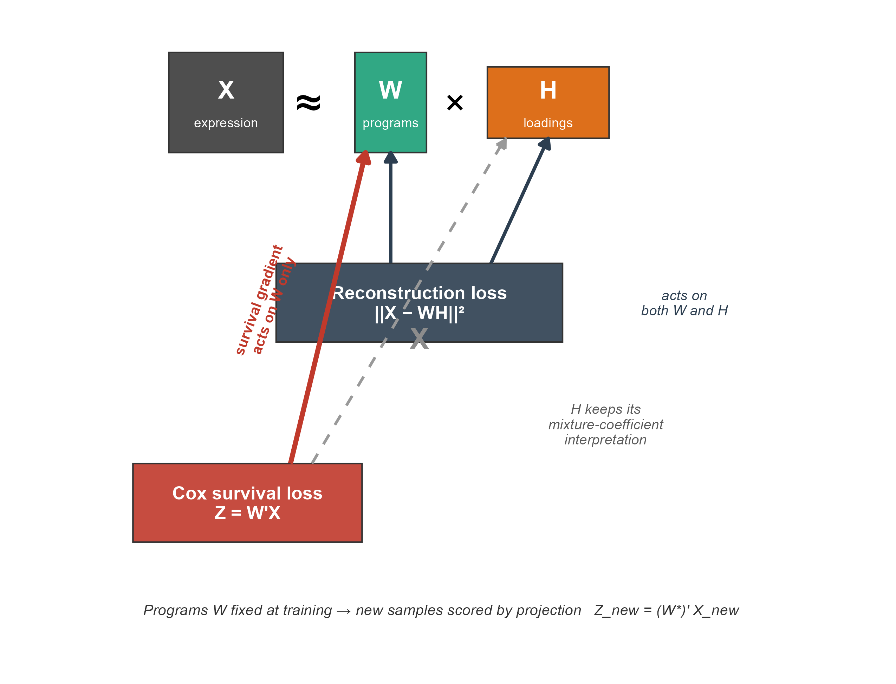
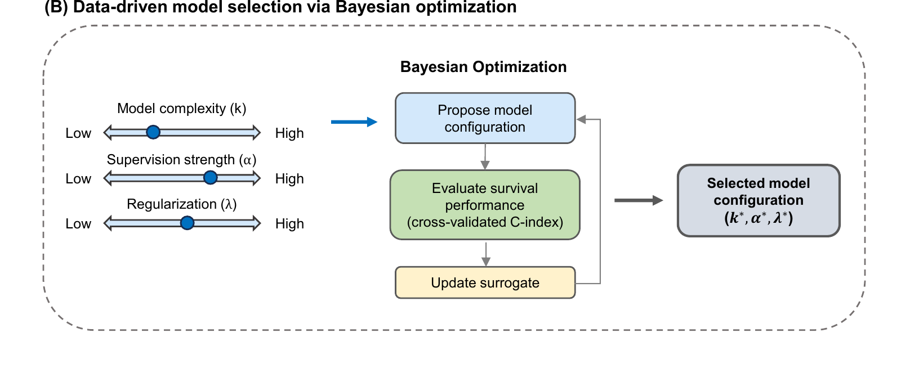
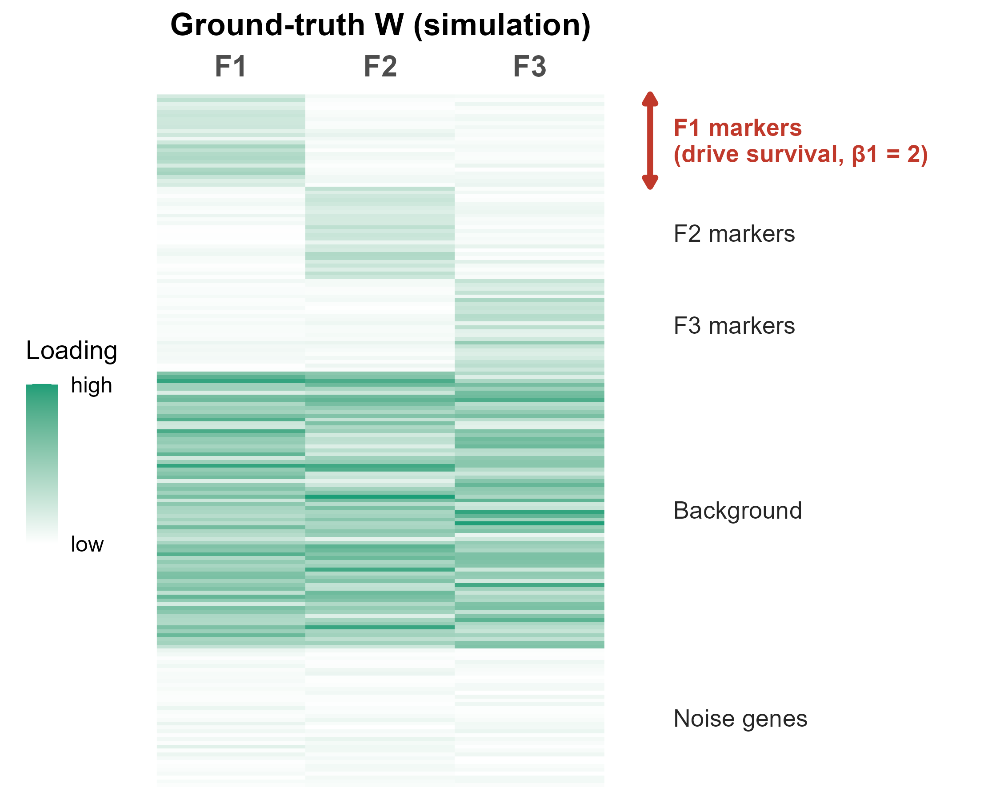
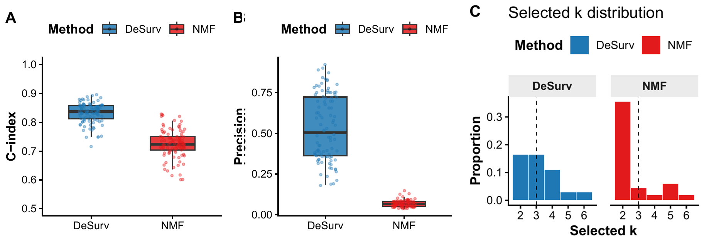
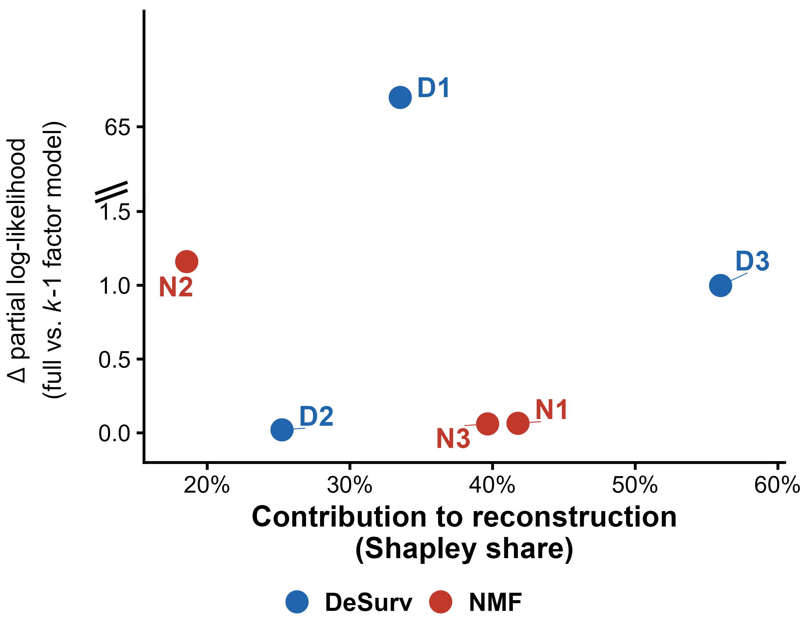
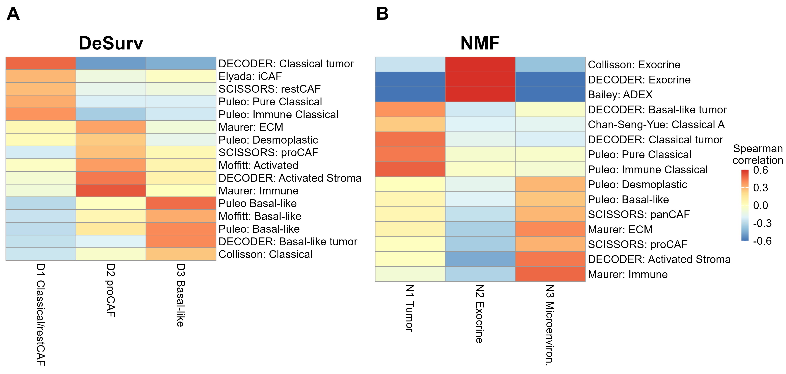

PhD Dissertation Defense
Rashid Lab · University of North Carolina at Chapel Hill
Advisors: {{ADVISORS}}
Committee: {{COMMITTEE MEMBERS}}
2026-06-26






Two tests:




Funded by DOD HT9425241103100121